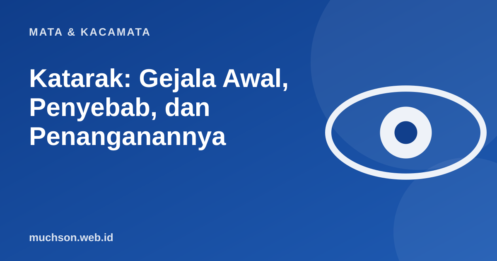

Beranda › Artikel › Mata & Kacamata
Mata & KacamataKatarak: Gejala Awal, Penyebab, dan Penanganannya
Katarak adalah salah satu penyebab utama kebutaan di dunia, termasuk di Indonesia, padahal termasuk kondisi yang paling bisa ditangani. Banyak orang tua menganggap pandangan yang makin berkabut sebagai bagian wajar dari penuaan dan menunda pemeriksaan. Artikel ini membantu mengenali gejalanya dan memahami penanganannya.

Apa itu katarak?
Di dalam mata ada lensa alami yang jernih, bertugas memfokuskan cahaya ke retina. Katarak terjadi ketika lensa ini menjadi keruh, sehingga penglihatan tampak berkabut, seperti melihat melalui kaca jendela yang berembun. Menurut WHO, katarak termasuk penyebab utama gangguan penglihatan dan kebutaan secara global.
Gejala yang perlu diwaspadai
Katarak biasanya berkembang perlahan selama bertahun-tahun, sehingga penderitanya sering tidak menyadari seberapa banyak penglihatannya berkurang. Keluarga sering lebih dulu memperhatikan, misalnya orang tua mulai sering tersandung atau kesulitan mengenali wajah.
Faktor risiko
| Faktor | Keterangan |
|---|---|
| Usia | Penyebab paling umum; risiko meningkat seiring bertambah usia |
| Diabetes | Meningkatkan risiko dan bisa mempercepat katarak |
| Merokok | Berkaitan dengan risiko katarak yang lebih tinggi |
| Paparan sinar UV jangka panjang | Kacamata hitam UV400 dan topi membantu melindungi |
| Pemakaian obat steroid jangka panjang | Konsultasikan dengan dokter |
| Cedera mata | Dapat memicu katarak di usia berapa pun |
| Bawaan lahir | Katarak kongenital pada bayi, perlu penanganan segera |
Penanganan: operasi adalah solusi efektif
Pada tahap awal, kacamata baru atau pencahayaan lebih terang bisa membantu sementara. Namun tidak ada obat tetes atau makanan yang terbukti menjernihkan lensa yang sudah keruh. Bila katarak mulai mengganggu kegiatan sehari-hari, operasi katarak adalah penanganan yang efektif: lensa keruh diangkat dan diganti dengan lensa tanam buatan (intraocular lens, IOL).
Di Indonesia, operasi katarak dapat ditanggung program JKN sesuai ketentuan dan prosedur rujukan yang berlaku. Tanyakan ke fasilitas kesehatan tingkat pertama Anda.
Setelah operasi
- Pakai tetes mata sesuai jadwal dari dokter.
- Hindari mengucek mata dan melindungi mata dari air kotor dan debu sesuai saran dokter.
- Datang kontrol sesuai jadwal.
- Segera hubungi dokter bila nyeri hebat, penglihatan menurun mendadak, atau mata sangat merah.
- Kacamata baru (misalnya untuk membaca) biasanya diresepkan setelah mata stabil.
Tanya jawab
Apa gejala awal katarak?
Apakah katarak bisa sembuh tanpa operasi?
Apakah operasi katarak berbahaya?
Bagaimana mencegah katarak?
Sumber dan bacaan lanjut
- WHO: Blindness and vision impairment (fact sheet)
- WHO: World report on vision (2019)
- Kacamata hitam UV400 (artikel terkait)
- Tanda bahaya mata yang tidak boleh ditunda (artikel terkait)